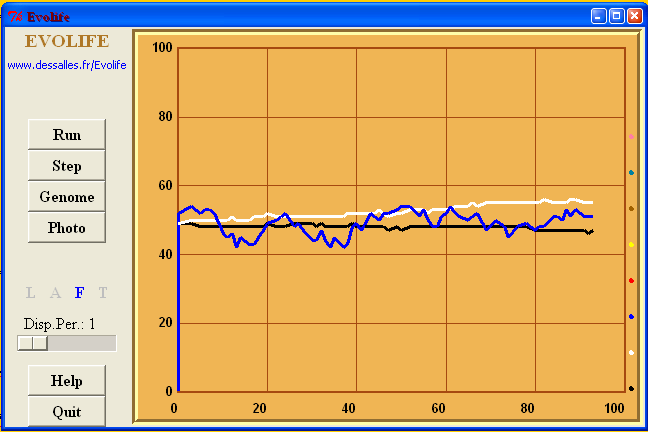

Evolife first creates an ‘observer’, which contains a few global constants and performs statistics as the simulation runs.
Evolife then creates a population of individuals. The population is structured in groups. Individuals interact and procreate within groups, and migrate between groups. Each individual is characterized by its genotype (class Genome), its phenotype (class Phenome) and its social network (class Alliances) (see Evolife classes).
Evolife then starts the main window, defined in Evolife_Window.py (see Evolife source files).

When the button is clicked on (or the key R is pressed), Evolife starts the simulation. The function stored in self.OneStep is the function called from the application (in basic Evolife: Population.py) that executes one step of the simulation (typically, one complete year, with interactions, reproduction, selection and migration). Then control is given to the function self.ReturnFromThread (defined in Evolife_Window.py), which interprets the results produced by the simulation and plots curves. If self.OneStep returns False, then the simulation stops, otherwise it resumes.
The Evolife window provides various buttons and keyboard shortcuts, as defined in the Help file.
When Evolife quits, it creates various files. See How to execute Evolife.